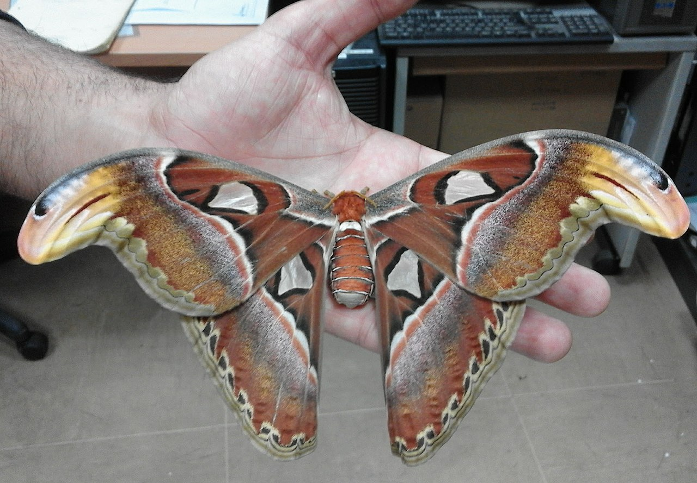

Attacus atlas, the Atlas moth, is a large saturniid moth endemic
to the forests of Asia. The species was first described by Carl
Linnaeus in his 1758 10th edition of Systema Naturae.
Life Cycle of the Atlas Moth
Mating Females release powerful
pheromones through a gland on the end of the abdomen to
attract a mate. The female does not stray far from the
location of her discarded cocoon. She seeks out a perch
where the air currents will best carry her pheromones. Males
can detect and home in on these pheromones from several
kilometers away using chemoreceptors located on their
feathery antennae. Once fertilized, the female lays a number
of spherical eggs, 2.5 mm (0.098 in) in diameter, on the
undersides of the leaves of food plants.
Larva Dusty-green caterpillars
hatch after approximately two weeks and feed voraciously on
the foliage of citrus, cinnamon, guava, and evergreen trees.
The caterpillars can grow to 11.5 cm (4.5 in) in length and
2.5 cm (0.98 in) in thickness. They are adorned with white,
waxy, fleshy spines along their backs, which become more
prominent at later instars. Beside the prolegs on the last
abdominal segment, there is a large green spot surrounded by
an orange ring.
Pupa After reaching a length of
about 11.5 cm (4.5 in), the caterpillars are ready to
pupate. They spin a 7-8 cm long papery cocoon interwoven
with desiccated leaves and attach it to a twig using a
strand of silk. The adult moths emerge from the cocoon after
approximately four weeks depending on environmental factors.
Imago Male Atlas moth Adult
Atlas moths are weak, unsteady fliers. To conserve energy,
the moths rest during the day and fly at night. As they lack
fully formed mouthparts, the adults cannot eat, subsisting
entirely on fat reserves accumulated during the larval
stage. As a result, they live for only a few days during
which their sole objective is seeking out a mate. Adults may
be found on wing throughout the year but are most abundant
between November and January.

Big Freaking Moth!
Habitat
Their habitat is primarily dry tropical forests, secondary forests, and shrublands
across:
South Asia
East Asia
Southeast Asia, including Borneo
Etymology
Atlas moths are named after either Atlas, the Titan of Greek
mythology (due to their size), or their map-like wing patterns.
In Hong Kong, the Cantonese means "snake's head moth", referring
to the prominent extension of the forewing which bears
resemblance to the head of a snake.
Trivia
The Japanese subspecies A. a. ryukyuensis, native to Yonaguni in
the Yaeyama Islands, may have served as inspiration for the
movie monster Mothra.